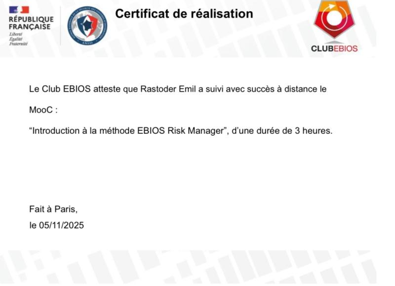
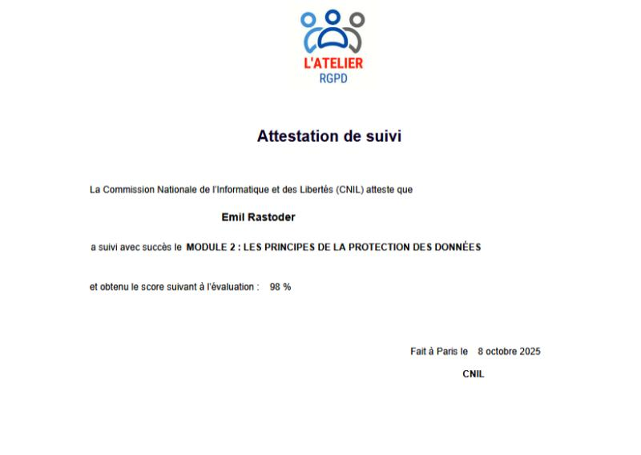
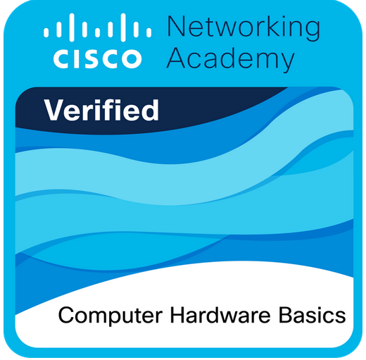
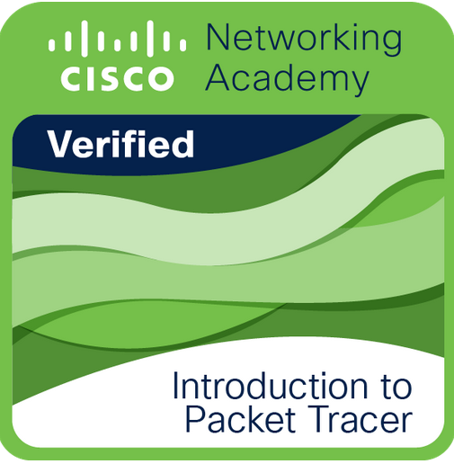
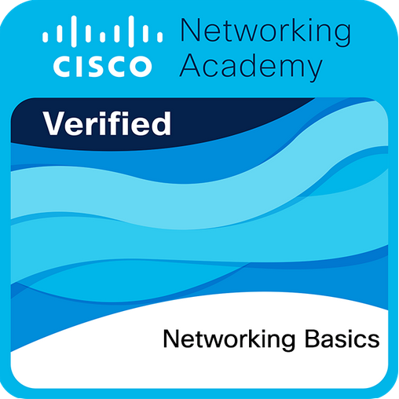
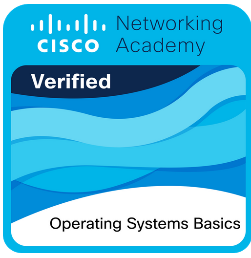

Stage 2022-2023 : 316 Colors
- Travail d'équipe
- Découverte du monde du travail
- Découverte du milieu de l'imprimerie 2D/3D
Étudiant en BTS SIO SISR, passionné par la cybersécurité, le réseau, le développement et les nouvelles technologies.
Me contacterEmail : eras39948@gmail.com
Tél : 07 82 58 65 33
LinkedIn : Emil Rastoder
Je m'appelle Emil Rastoder, j'ai 18 ans et je suis étudiant en BTS SIO option SISR au Lycée Turgot (Paris). Passionné depuis mes 14 ans par la cybersécurité et l’informatique, j’ai approfondi mes compétences grâce à mon Bac Pro SN et maintenant au BTS SIO. Passionné par l’informatique et les nouvelles technologies, je m’intéresse particulièrement à l’administration des systèmes, la gestion et la sécurisation des réseaux, ainsi qu’à la cybersécurité.
Au fil de mes stages et de mes expériences, j’ai développé des compétences en travail d’équipe, en autonomie et en relation clientèle. Je suis curieux, organisé et motivé à apprendre en continu pour améliorer mes connaissances techniques.
Mon objectif professionnel est de devenir administrateur systèmes et réseaux ou expert en cybersécurité, afin de contribuer à la protection et à l’optimisation des infrastructures informatiques en entreprise.
Site Internet de Location de Voiture
Créer une plateforme en ligne permettant aux utilisateurs de réserver une voiture de location facilement, avec une interface intuitive et moderne. Le site vise à simplifier le processus de recherche, de comparaison et de réservation de véhicules.
Installation de LAMP + WordPress sur Linux
Mettre en place un environnement serveur complet (LAMP) sur une distribution Linux afin d’héberger un site WordPress. Ce projet démontre des compétences en administration système, configuration serveur et déploiement d’applications web.
Création d'un serveur de jeu sur Linux
Mettre en place un serveur de jeu multijoueur sur une distribution Linux afin de permettre aux utilisateurs de se connecter et jouer en ligne. Ce projet illustre des compétences en administration système, gestion réseau et configuration de services dédiés aux jeux vidéo.

Obtenue en 2025
Voir sur LinkedIn
Obtenue en 2025
Voir sur LinkedIn
Obtenue en 2025
Voir sur Credly
Obtenue en 2025
Voir sur Credly
Obtenue en 2025
Voir sur Credly
Obtenue en 2025
Voir sur CredlyUn ransomware (ou rançongiciel) est un logiciel malveillant qui chiffre ou bloque l’accès aux données d’une organisation afin d’exiger une rançon pour les restituer. Ces attaques, en forte croissance, visent particulièrement les entreprises et peuvent paralyser leurs activités, causer des pertes financières majeures et nuire à leur réputation.
Vous pouvez consulter mon tableau de synthèse en cliquant sur le bouton ci-dessous :
Voir le Tableau